Мелоксикам инъекции
Мелоксикам таблетки
Лорноксикам инъекции
Лорноксикам таблетки
Теноксикам в мире
Клинические исследования

Библиотека
FAB и BIF
Визиты CP
Инструкции конкурентов
Краткое описание препарата
Статьи по препарату
Тексаред инъекции инструкция
Тексаред таблетки инструкция
Схема ступенчатой терапии
Фразы для аптек
FAB и BIF Тексаред
Визит в аптеку
Визит к неврологу №1 октябрь - ноябрь
Визит к неврологу №2 декабрь - январь
Визит к неврологу №3 февраль - март
Дополнительные слайды Тексаред
Фармкружок
Ксефокам иньекции
Ксефокам таблетки
Мовалис иньекции
Мовалис таблетки
Краткая информация по препарату Тексаред
Теноксикам в лечении острой цервикалгии.Табеева Г.Р. 2014
Теноксикам. А.Е.Каратеев. Клиническая фармакология и терапия.2017